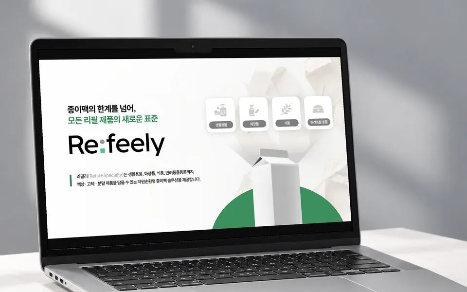

IR
투자자가 끝까지 읽는 IR 자료를 만듭니다.
초기 스타트업의 IR, 투자제안서, 피치덱을 맡습니다.
디자인 전에 내용부터 봅니다. 무엇을 앞에 두고 무엇을 크게 보여줄지 정하고, 한 장에 내용이 너무 많으면 핵심 문장을 다시 정해 장을 나눕니다.
숫자는 보내 주신 원자료와 하나씩 맞춰 보고, 안 맞는 곳은 표시해서 확인받습니다.
차트는 PPT에서 직접 고칠 수 있게 만듭니다.
이런 자료로 시작할 수 있습니다
- 줄글이나 메모만 있는 상태
- 내용은 정해졌는데 디자인이 필요한 초안
- 이미지나 PDF로만 있어서 고칠 수 없는 IR
진행
- 01자료와 일정 확인
- 02흐름과 대표 시안
- 03전체 제작과 수정
- 04PPTX·PDF 납품
자주 묻는 질문
네. 예비창업패키지, 초기창업패키지, 창업도약패키지, TIPS, 재도전성공패키지, 로컬크리에이터 같은 지원사업의 사업계획서 발표평가 PPT를 만듭니다. 기관 양식이 있으면 양식에 맞추고, 발표 시간에 맞게 장수를 정합니다.
네. 글자와 도형을 PPT에서 직접 고칠 수 있는 PPTX로 다시 만듭니다.
네. 내용은 그대로 두고 디자인만 새로 하거나, 흐름까지 함께 정리할 수 있습니다.